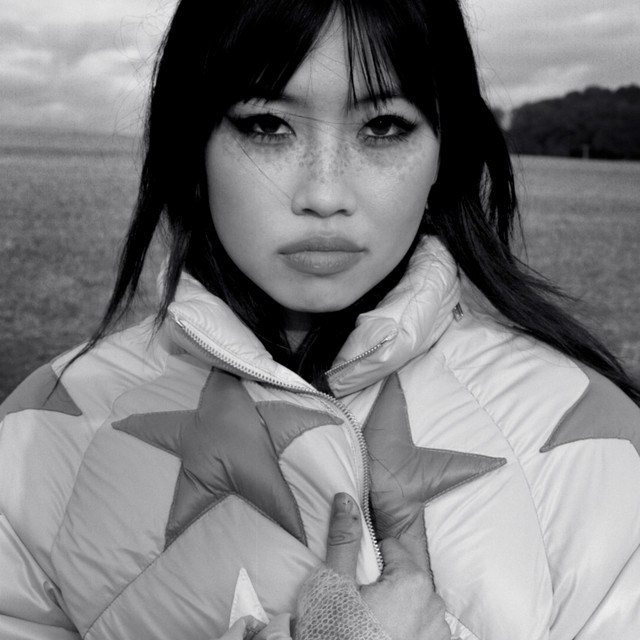

Beatrice Kristi Ilejay Laus (born 3 June 2000), known professionally as beabadoobee is a Filipino-British singer-songwriter. From 2018 to 2021, she released five extended plays under the independent label Dirty Hit: Lice (2018), Patched Up (2018), Loveworm (2019), Space Cadet (2019) and Our Extended Play (2021). Her debut studio album, Fake It Flowers, was released in October 2020 and received critical acclaim. Her second studio album, Beatopia, was released on July 15, 2022. Beabadoobee served as a supporting act for labelmates The 1975 during several legs of their Music for Cars Tour, as well as American singer Clairo during her Immunity Tour. She was nominated for the Rising Star Award at the 2020 Brit Awards, and was presented with the Radar Award at the 2020 NME Awards. Beabadoobee was also predicted as a breakthrough act for 2020 in an annual BBC poll of music critics, Sound of 2020.
Literally the best fucking artist ever and if you disagree, fuck you. Laus was born in Iloilo City in the Philippines on 3 June 2000 and moved to London with her parents at the age of 3. She grew up in West London listening to original Pinoy music as well as pop and rock music from the 1980s. While she was a teenager, she listened to indie rock including Karen O, Yeah Yeah Yeahs, Florist and Alex G. She was permanently excluded (official UK term now used instead of expelled) from Sacred Heart High School before completing her thirteenth year at Hammersmith Academy. Laus spent seven years learning to play the violin, before getting her first guitar second-hand at the age of 17. She was under the tutelage of YouTube tutorials produced by other accomplished guitarists. She was inspired by Kimya Dawson and the Juno soundtrack to start making music.
The first song Beabadoobee wrote on her guitar was "Coffee". She released the song as well as a cover of Karen O's "The Moon Song" in September 2017. "Coffee" gained over 300,000 views on YouTube, as well as the attention of Dirty Hit Records. She signed to the label in April 2018. This was followed by the release of her debut EP Lice in March 2018 and her second EP Patched Up in December 2018. In January 2019, Beabadoobee was placed with Billie Eilish on NME's annual list of "essential new artists", the "NME 100". She subsequently released her third EP titled Loveworm. Beabadoobee released an acoustic version of this EP titled Loveworm (Bedroom Sessions) in July 2019.
In September 2019, Beabadoobee embarked on her first tour supporting Clairo on her Immunity Tour, before releasing her fourth EP, Space Cadet, in October 2019. Beabadoobee subsequently made the front cover of NME on 25 October 2019. She was shortlisted for the Rising Star Award at the 2020 Brit Awards in December 2019. In November 2019, Beabadoobee released a pair of Spotify Singles, one being a cover of "Don't You Forget About Me" by Simple Minds as well as a version of "She Plays Bass" recorded in Abbey Road Studios in London. In December 2019, Beabadoobee was longlisted in the annual BBC poll of music critics, Sound of 2020.
A sample of Beabadoobee's 2017 debut single "Coffee" was used on Canadian rapper Powfu's 2019 single, "Death Bed (Coffee for Your Head)". The song became a massively successful sleeper hit after going viral on the app TikTok in early 2020, becoming Beabadoobee's first official chart entry in her career, both locally and internationally. By April 2020, it had entered the Top 5 in several countries including he UK, Australia and New Zealand. It earned gold certification status in Belgium, Canada, France, Mexico and New Zealand, as well as Platinum or higher in the US and the UK among several other countries. Speaking about her reaction to the popularization of "Death Bed", Beabadoobee said, "I'm not going to lie, it was overwhelming… I kinda hated it. I hated more people knowing about the first song I'd ever written and not my others. I was so stubborn but I grew into it and accepted that's just how life works. I was extremely grateful for its existence and it's only given me more opportunities."